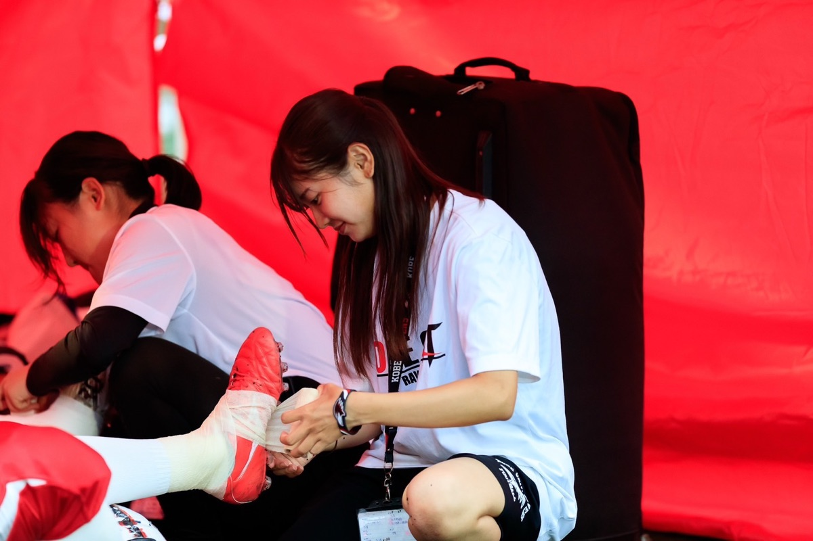
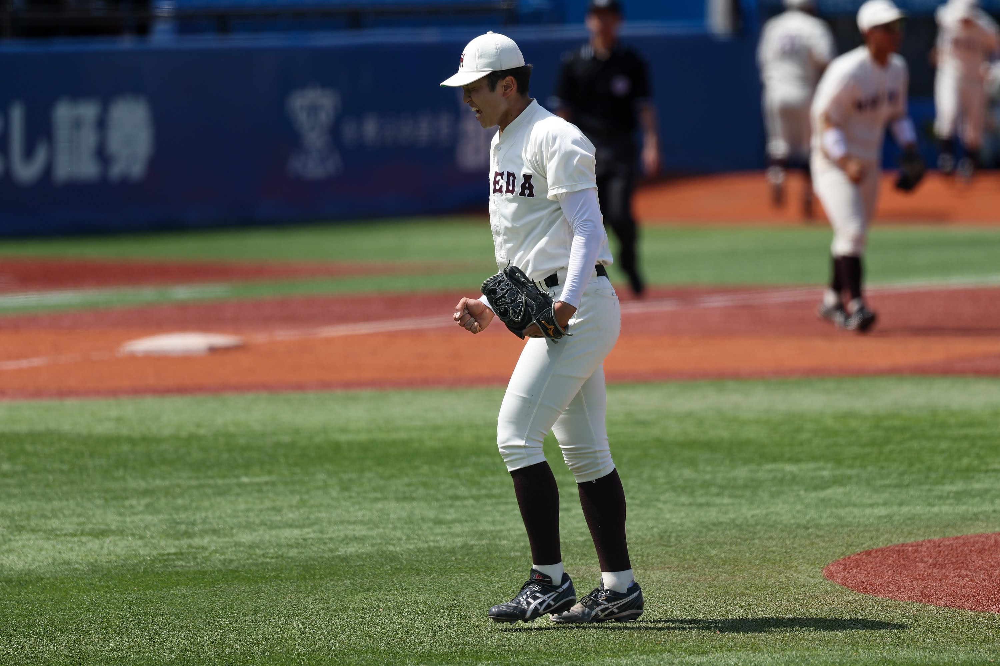
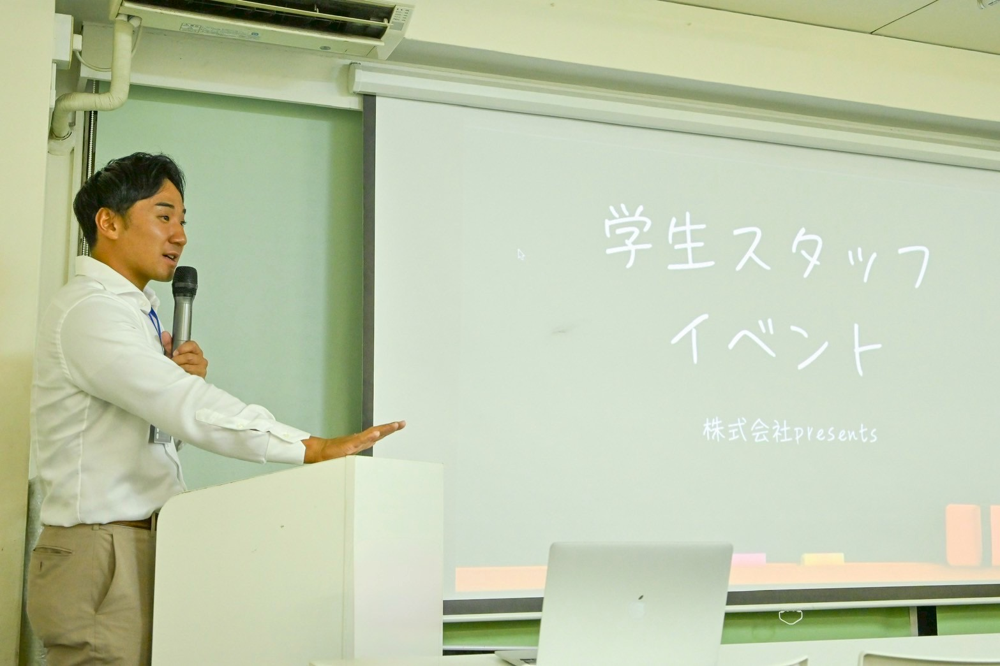
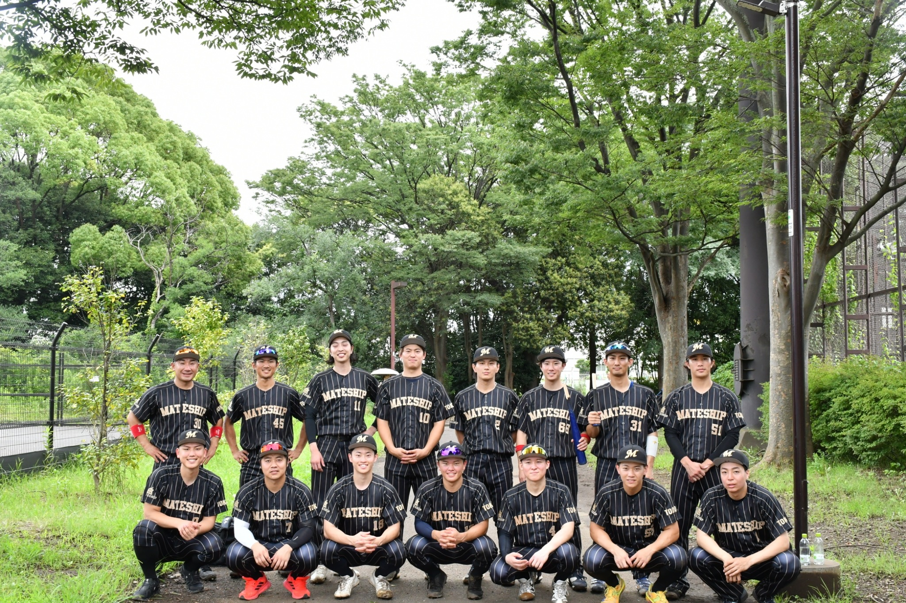

01
HIGH SCHOOL
監督・先生・仲間
礼儀・継続・努力
高校教員・監督・指導者の皆さまへ
高校3年間で育てた教え子の大学4年間、
そしてその先の社会まで。
MATESHIPは、教え子の成長に伴走します。
大学生活に流されていないか
競技だけで4年間が終わっていないか
良い仲間と出会えているか
将来について考えているか
相談できる大人はいるか
高校までは、先生や監督がそばにいた。
でも大学からは、本人の選択がすべてになる。
だからこそ、誰と出会うか。
どんな環境に身を置くか。
その違いが、大学4年間を大きく変えます。
外からは、競技も大学生活も順調に見える。けれど、自由になった瞬間から、時間の使い方も、付き合う人も、将来を考えるタイミングも、すべて本人に委ねられます。一部の現場には、休めば置いていかれるような空気もあります。
誰かが声をかけなければ、悩みは見えないままです。
A DAY IN UNIVERSITYある体育会学生の一日〈例〉

意欲がないからではない。疲れを取るか、何も考えなくていい時間を過ごすか。部活へ戻るための回復と気晴らしだけで、貴重な空き時間が終わることもあります。自分の将来と向き合う余白が、日常の中にない。
一日休むことが、ポジションを失うことのように感じられる。
一部の体育会では、アルバイト自体が認められていない。部外との接点も広がりにくい。
説明会も面接も練習と重なる。休む後ろめたさから、動き出しも遅れる。
自分で情報を集める余裕も接点も少なく、先輩や部内に届く案内を待つ形になりやすい。
競技に打ち込むことと、
自分の未来を考えること。
その両立は、想像以上に難しい。
高校で培ったものを、大学で磨き、社会につなげる。
その4年間を、MATESHIPが支えます。
01
監督・先生・仲間
礼儀・継続・努力
02
MATESHIP自由・環境・出会い
選択・挑戦・将来
03
仕事・自立・責任
自分の人生
MATESHIPは、競技を頑張るだけの場所でも、就活だけをする場所でもありません。大学・競技を越えた仲間と出会い、自分を知り、社会を知り、挑戦する場所です。

上下関係が絶対意見を言うことが悪いとされる。
理不尽が当たり前「自分たちもやってきたから」が繰り返される。
暴言・パワハラ厳しさと人格否定の境界が曖昧になる。
競技しかない怪我や引退で、自分の価値まで見失う。
一人で抱える弱音を吐けず、誰にも相談できない。
MATESHIPは、スポーツの価値を大切にしながら、理不尽と閉鎖性は次の世代へ残さない。
古い体育会を、すべて否定したいわけではない。僕たち自身も、スポーツに育ててもらった。
残すべきものは残す。
変えるべきものは変える。
その文化を、次の世代につなぎます。
先生が知っている高校時代の姿。大学で見えてくる今の姿。その両方をつなぎながら、教え子の成長を一緒に見守ります。
大学の同期が指導していた教え子の実例
監督のつながりで、社会人野球のマネージャーになることを進路として考えていた、ある野球部の学生。MATESHIPとの出会いから、知らなかった仕事や社会人に触れ、進路の可能性を広げていきました。
身近にある情報の中で、進路を決めようとしていた。
競技の外にいる社会人と話し、自分の可能性を考え直した。
野球に関わる道を、自分の意思で選び直した。
決められた道を否定したのではない。
知らなかった選択肢に出会い、自分で選び直した。
※プライバシーに配慮し、個人を特定しない形で掲載しています。
野球しかしてこなかった。
自由になったが、何をすればいいか分からなかった。
仲間と出会った。社会人と話した。自分について考え始めた。
競技以外にも挑戦し、後輩を支える側になった。
自分の人生を、自分で選ぶ。

僕自身、日本体育大学で野球を続け、日本一を獲りました。仲間と同じ目標を追い、勝つ喜びも、努力が報われる瞬間も知りました。野球に育ててもらったという感謝は、今も変わりません。
しかし、その場所で、体育会の光と闇の両方を肌で感じました。
甲子園を沸かせたスター選手が、「もう、やる気はありません」と口にする。野球だけでなく、自分の人生まで諦めたような表情になっていく。そんな姿を、僕は7世代にわたって目の前で見てきました。
彼らの情熱がなくなったのではありません。競技以外の世界を知る時間も、自分の将来を考えるきっかけもないまま、可能性を見失っていただけだと思うのです。
高校時代、先生方が本気で向き合い、育て、未来へ送り出した教え子たち。その心に灯した火を、大学4年間で消させたくない。
高校で灯した火を、
大学4年間で消させない。
競技の結果だけではなく、教え子が自分の人生をもう一度信じられるところまで。先生方と一緒に、その先を見ていきたいと考えています。
大学・競技種目を問わず、スポーツに本気で向き合ってきた大学生が参加できます。まずは本人との対話から始めます。
就活時期だけではなく、日常・競技・人間関係・キャリア・社会との接点まで、大学4年間の成長に伴走するコミュニティです。
学生本人の意思とプライバシーを尊重しながら、必要に応じて先生方とも連携し、成長を一緒に見守ります。
もちろんです。オンラインまたは対面で、活動内容や考え方をご説明します。教え子の紹介を前提とした面談ではありません。

FOR THE NEXT GENERATION
紹介のお願いではありません。
まずは、MATESHIPが大切にしていることをお話しさせてください。